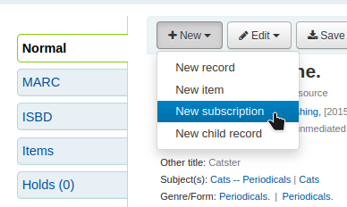
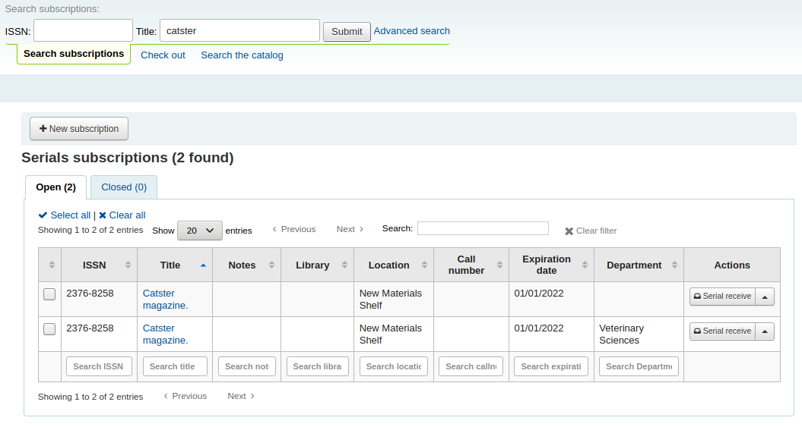
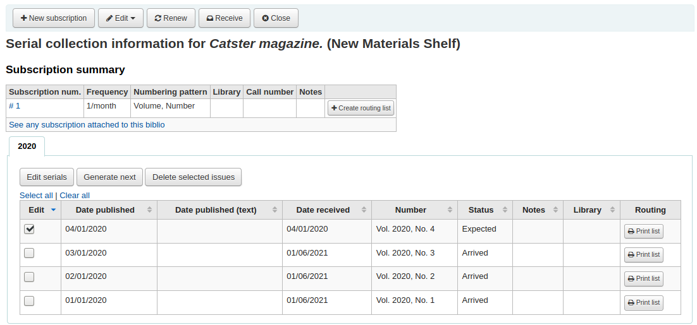
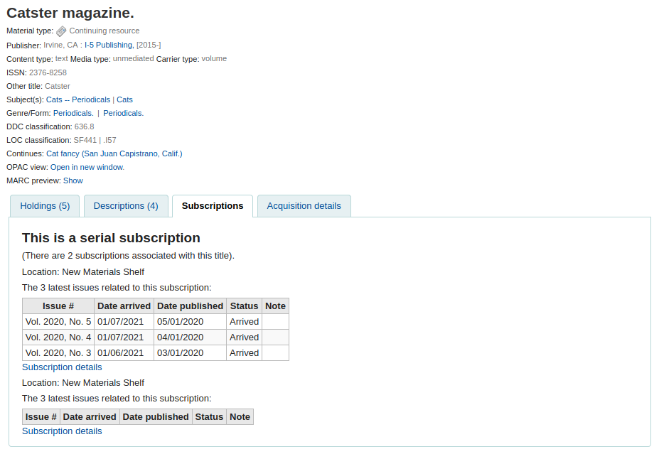
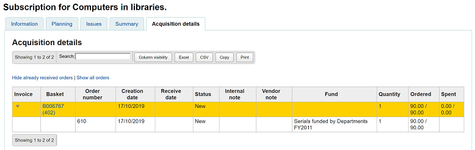
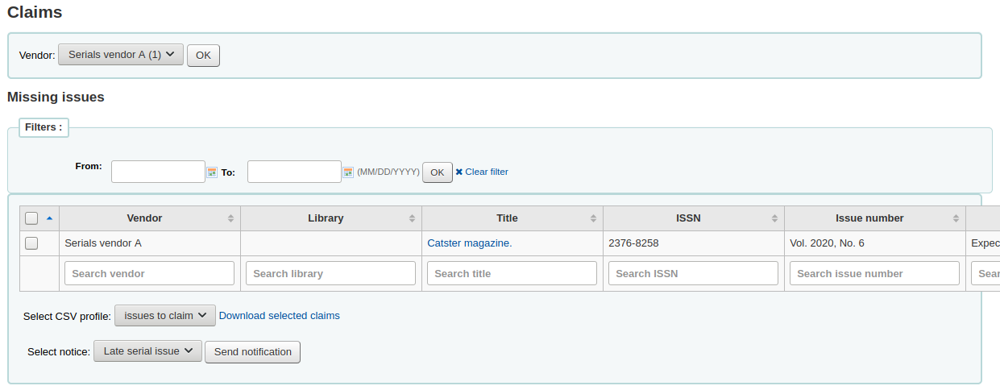
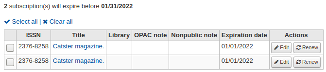

Serials
Serials actions can be accessed by going to the ‘More’ menu at the top of your screen and choosing ‘Serials’ or by clicking ‘Serials’ on the main Koha staff interface page. The serials module in Koha is used for keeping track of journals, newspapers and other items that come on a regular schedule.
As with all modules, make sure you go through the related implementation checklist and system preferences before using the serials module.
Get there: More > Serials
Manage serial frequencies
Koha keeps a record of publication frequencies for easy management and duplication.
Get there: More > Serials > Manage frequencies
From this page you can view all of the existing frequencies in your system.

You can edit, delete and create new ones.
Adding a frequency
To add a new frequency, click on the ‘New frequency’ button.
Description: this is the name that will appear in the drop-down menu when creating a new serial subscription; make sure it is descriptive
Unit: this is the unit used for counting the cycle of publication. Choose either none (for irregular frequencies), day, week, month, or year.
Issues per unit: this is how many issues are published during the unit chosen above (this will usually be 1).
Units per issue: this is how many units must we count until the next issue is published.
Display order: this is the display order in the drop-down menu when creating a new subscription (you may want to put the most used frequencies at the top and the less frequent at the bottom; the top-most position is 0). Several frequencies can have the same display order value. If this is the case, they will appear in the order they were created.
小技巧
To understand ‘issues per unit’ versus ‘units per issue’ you can read it as ‘<issues per unit> issue(s) every <units per issues> <unit>’. For example, a biweekly frenquency (every two weeks) would be ‘1 issue every 2 weeks’. So ‘issues per unit’ would be 1 and ‘units per issue’ would be 2. See below for more examples.
Examples
Here are some examples for most common serial publication frequencies.
Frequency |
Unit |
Issues per unit |
Units per issue |
|---|---|---|---|
Daily (“1 issue every 1 day”) |
Day |
1 |
1 |
Three times per week (“3 issues every 1 week”) |
Week |
3 |
1 |
Semiweekly (“2 issues every 1 week”) |
Week |
2 |
1 |
Weekly (“1 issue every 1 week”) |
Week |
1 |
1 |
Biweekly (“1 issue every 2 weeks”) |
Week |
1 |
2 |
Monthly (“1 issue every 1 month”) |
Month |
1 |
1 |
Bimonthly (“1 issue every 2 months”) |
Month |
1 |
2 |
Quarterly (“1 issue every 3 months”) |
Month |
1 |
3 |
Semiannual (“1 issue every 6 months”) |
Month |
1 |
6 |
Annual (“1 issue every 1 year”) |
Year |
1 |
1 |
Biennal (“1 issue every 2 years”) |
Year |
1 |
2 |
Manage serial numbering patterns
Every time you create a new numbering pattern in serials you can save it for later use. These patterns are accessible via the ‘Manage numbering patterns’ page.
Get there: More > Serials > Manage numbering patterns
This page will list for you the numbering patterns you have saved in the past as well as a few basic patterns.
注解
If you have upgraded from an old version of Koha (before 3.14) you will see ‘Backup patterns’ listed for patterns. This is how Koha saved your old numbering patterns. You can edit these to give them more meaningful names from here.
Adding a numbering pattern
To add new new pattern click the ‘New numbering pattern’ button.

Name: this is the name that will appear in the drop-down menu when creating a new serial subscription; make sure it is descriptive.
Description: this is to further describe the numbering pattern; this does not appear when creating a new subscription, it only displays in the numbering patterns table (see above).
Numbering formula: this is what is used to create the number for each issue. You can use up to three variables {X}, {Y}, and {Z} (see below). Along with the variables, you can enter any text you want to have appear in the issue number. You must also include any spaces you want to see in the issue numbers. The text will stay the same for each issue and the variables will vary.
警告
The variables must be in capital letters and between curly brackets.
Examples
Vol. {X} No {Y}
Issue {X}
{X} {Y}
Display order: this is the display order in the drop-down menu when creating a new subscription (you may want to put the most used frequencies at the top and the less frequent at the bottom; the top-most position is 0). Several frequencies can have the same display order value. If this is the case, they will appear in the order they were created.
In the table, you need to enter the parameters for each variable.
Label: this is simply a name for the variable, it is not used anywhere else, but it helps identify what the variable is supposed to be.
Add: how many numbers or units are added to the variable.
Each: the numbers or units added to the variable are added each how many issues.
Set back to: this is used for cyclic numbering; enter the starting number.
When more than: this is used for cyclic numbering; enter the last number.
小技巧
When filling out these four parameter (‘add’, ‘each’, ‘set back to’ and ‘when more than’), work column by column and read it as a sentence: “Add 1 Every 1 issue, set back to 1 when greater than 10”.
Formatting: this is used if, instead of numbers, you want words to appear in your issue number. You can choose
Name of day (Monday, Tuesday, Wednesday, etc.)
Name of day (abbreviated) (Mon, Tue, Wed, etc.)
Name of month (January, February, March, etc.)
Name of month (abbreviated) (Jan, Feb, Mar, etc.)
Name of season (Spring, Summer, Fall, Winter)
Name of season (abbreviated) (Spr, Sum, Fal, Win)
警告
When filling out the table, you must always use numbers, even to represent names of days, months or seasons. Here are the equivalent for each
Days |
Sunday |
0 |
Monday |
1 |
|
Tuesday |
2 |
|
Wednesday |
3 |
|
Thursday |
4 |
|
Friday |
5 |
|
Saturday |
6 |
|
Months |
January |
0 |
February |
1 |
|
March |
2 |
|
April |
3 |
|
May |
4 |
|
June |
5 |
|
July |
6 |
|
August |
7 |
|
September |
8 |
|
October |
9 |
|
November |
10 |
|
December |
11 |
|
Seasons |
Spring |
0 |
Summer |
1 |
|
Fall |
2 |
|
Winter |
3 |
Before you save your numbering pattern, you can test it to make sure it behaves as you intend.
Frequency: choose a frequency that fits with your numbering pattern.
First issue publication date: choose a date where your test will start.
Subscription length: enter a number of issues, weeks or months to test your numbering pattern; if the numbering pattern is cyclic, it is recommended to try at least two cycles to see the change in cycles and make sure it behaves correctly.
Locale: if using names of days, months or season, you can choose the language in which these names will be displayed.
注解
Locale doesn’t currently work well with season names.
Next enter the parameters for your variables.
Begins with: enter the first value for each variable, these should be the values of the issue entered in ‘First issue publication date’ above.
Inner counter: enter how many issues have already passed in the cycle, so that Koha can calculate when to cycle back.
Click ‘Test pattern’ to see the results. If the result is what you expected, you can save your numbering pattern. If the results does not match your expectations, go back and tweak the parameters and test again.
Examples
Month and year for monthly serials
Numbering formula: {X} {Y}
X
Y
Z
Label
Month
Year
Add
1
1
Every
1
12
Set back to
0
0
When more than
11
99999
Formatting
Name of month
Volume and number for monthly serials
Numbering formula: Vol.{X} No.{Y}
X
Y
Z
Label
Volume
Number
Add
1
1
Every
12
1
Set back to
0
1
When more than
99999
12
Formatting
Season and year for quarterly serials
Numbering formula: {X} {Y}
X
Y
Z
Label
Season
Year
Add
1
1
Every
1
4
Set back to
0
0
When more than
3
99999
Formatting
Name of season
Volume and number for weekly serials
Numbering formula: Vol.{X} No.{Y}
X
Y
Z
Label
Volume
Number
Add
1
1
Every
52
1
Set back to
0
1
When more than
99999
52
Formatting
Adding a subscription
Subscriptions can be added by clicking the ‘New’ button on any bibliographic record and choosing ‘New subscription’

Or click the ‘New subscription’ button in the serials module
If you are entering a new subscription from the Serials module you will be presented with a blank form (if creating new from a bibliographic record the form will include the record number info).

Vendor: can be found by either searching vendors entered via the Acquisitions module or manually entering the vendor ID number
Vendor information is not required
In order to claim missing and late issues you need to enter vendor information
Record: the biblionumber of the MARC record you’d like to link this subscription to
If you created a new subscription from a bibliographic record, the biblionumber and the title will already be filled in
You can search for an existing record by clicking on the ‘Search for record’ link below the boxes
If there is no existing bibliographic record for this subscription, you can create one by clicking on the ‘Create record’ link below the boxes
You can also manually enter the biblionumber for a record in the first box
Next you can choose whether a new item is created when receiving an issue
注解
If you add barcodes to issues or if your circulate them, choose to create an item upon reception
When there is an irregular issue: choose how to handle irregularities in your subscription, by either skipping the issue number or keeping the issue number
注解
If the numbers are always sequential, choose ‘Keep issue number’
Manual history: if checked, you will be able to enter serials outside the prediction pattern once the subscription is saved. For example, ‘The library has issues from June 1974 to December 1996’. To do so, go to the ‘Planning’ tab on the subscription detail page once the subscription is saved and click ‘Edit history’.
Call number: your item’s call number or call number prefix, this will be copied to items if they are created upon receiving.
Library: the branch that owns this subscription.
If more than one library subscribes to this serial you will need to create a subscription for each library
This can be done easily by using the ‘Edit as new (duplicate)’ option found on the subscription information page and changing only the ‘Library’ field
Public note: any notes you would like to appear in the OPAC for the patrons
Nonpublic note: should be used for notes that are only visible to staff members via the staff interface
Patron notification: you can pick a notice to send to patrons who subscribe to updates on this serial via the OPAC.
For this option to appear you need to make sure that you have a ‘Serials (new issue)’-type notice set up in the ‘Notices and slips’ tool
Location: the shelving location, this will be copied to items if they are created upon receiving.
Item type: if creating items upon reception, choose the item type of the items created.
Item type for older issues: if creating items upon reception, choose the item type that will be assigned to previous issues when receiving new issues. This will only appear only if the makePreviousSerialAvailable is enabled.
Grace period: the number of days before an issue is automatically moved from ‘Expected’ status to ‘Late’. This mechanism requires that the SerialsUpdate.pl cron job is set up to run regularly.
Number of issues to display to staff: this allows you to control how many issues appear by default in the staff interface catalog, in the ‘Subscriptions’ tab of the bibliographic record.
If this is left empty, the value of the StaffSerialIssueDisplayCount system preference will be used.
注解
This does not affect the number of items shown in the ‘Holdings’ tab if you create items for issues. It only affects the number of issues displayed in the ‘Subscriptions’ tab.
Number of issues to display to the public: this allows you to control how many issues appear by default in the OPAC, in the ‘Subscriptions’ tab in bibliographic records
If this is left empty, the value of the OPACSerialIssueDisplayCount system preference will be used.
注解
This does not affect the number of items shown in the ‘Holdings’ tab if you create items for issues. It only affects the number of issues displayed in the ‘Subscriptions’ tab.
Once that data is filled in you can click ‘Next’ to enter the prediction pattern information.

First issue publication date: enter the date of the issue you have in your hand, the date from which the prediction pattern will start
Frequency: choose the frequency of your serial. There are several pre-defined options all of which are visible alongside your own custom frequencies in ‘manage frequencies’. If the frequency you are looking for is not there, you can add a custom frequency.
Subscription length: enter the number of issues, weeks, or months in the subscription. This is also used for setting up renewal alerts.
Subscription start date: this is the date at which the subscription begins. This is used for setting up renewal alerts.
Subscription end date: this should only be entered for subscriptions that have ended (if you’re entering in a backlog of serials).
Numbering pattern: choose how issues are numbered. The options here are the ones in the manage numbering patterns section.
If the numbering pattern you need has not been created yet, you can create a new one by clicking on ‘Show advanced pattern’ and then ‘Modify pattern’. This is be the same as adding a numbering pattern (see section above).

Locale: if using names of days, months or season, you can choose the language in which these names will be displayed.
注解
Locale doesn’t currently work well with season names.
Once a ‘Numbering pattern’ is chosen the numbering table will appear.

Begins with: enter the first value for each variable, these should be the values of the issue entered in ‘First issue publication date’ above.
Inner counter: enter how many issues have already passed in the cycle, so that Koha can calculate when to cycle back.
For example: If the first issue to receive is “vol. 4, no. 1, iss. 796”, you need to set up “inner counter = 0” But if it’s “vol. 4, no. 2, iss. 797”, the inner counter should be “1”.
After filling in this data click the ‘Test prediction pattern’ button to see what issues the system will generate, if there are irregularities you can choose which issues don’t exist from the list presented.
If you have added custom fields, they will be editable above the buttons at the bottom of the screen
Click ‘Save subscription’ to save the information you have entered.
Editing a subscription
To edit a subscription, click on ‘Edit’ and ‘Edit subscription’ from the subscription page. This will take you back to the same form as the one used when creating a new subscription.
You can also batch edit subscriptions. To do so, search for the subscriptions you want to change. In the results, check the boxes next to the subscriptions to edit. The link ‘Edit selected serials’ will appear.

From there, you can change:
the vendor
the shelving location
the library
the item type
the public note
the nonpublic note
whether or not to create an item when receiving an issue
the expiration date
any custom fields

注解
Leave the field unchanged to keep the original values.
Receiving issues
Issues can be marked as received from several locations. To find a subscription, use the search box at the top of the Serials page to search for the serial you’d like to receive issues for:

From the search results you can click the ‘Serial receive’ buton or you can click on the subscription title and then click the ‘Receive’ button.
The final way to receive serials is from the ‘Serial collection’ page. To the left of the Subscription summary page there is a menu with a link to ‘Serial collection’
From the page that opens up, check the issue(s) you want to receive (the expected ones should be checked by default) and click ‘Edit serials’.

All three of these options will open up the issue receive form:

Choose ‘Arrived’ from the status drop-down menu to mark an issue as received.
If you have decided to have an item record created for each issue an item add form will appear after choosing ‘Arrived’. You can add multiple copies using the ‘Number of copies to be made of this item’ option at the bottom of the form.
If your issue has a supplemental issue with it, fill in the Supplemental issue information.
Key the entire numbering in the box after “Supplemental issue” no numbering will be inherited/auto-filled from the main issue, and exactly what you key in the box after “Supplemental issue” will be auto-filled in the item record’s Serial enumeration/chronology [MARC21 952$h] (if you create item records).
E.g., key this in its entirety if it’s what you would like displayed: “v.69 no.3 (Mar. 2015) suppl.”
If you have decided to have an item record created for each issue an item add form will appear for your supplement and for the issue itself
Once you have entered your info you can click ‘Save’
Serial collection
Each subscription has a Serial collection page available from the main Serials menu.
From this page you can manage additional tasks related to subscription issues such as receiving multiple issues and editing.
Clicking the Generate next button will generate the next issue for you and mark the previously expected issue as ‘Late’ automatically.
Check the box in the Edit column for one or more previous issues and then click the Edit serials button. This will bring you to the same screen as when you are receiving issues. From there, you can edit the numbering, dates, status, and add notes.
Creating a routing list
A routing list is a list of people who receive the serial before it goes to the shelf. To enable routing lists, set your RoutingSerials preference to ‘Use’.
When on the subscription page you will see a link to the left that reads ‘Create routing list’ or ‘Edit routing list’
Clicking that link will bring you to the form to add a new routing list.

From here, click ‘Add recipients’ to add users to the routing list. In the menu that appears you can filter patrons by part of their name, their library, or their patron category.
Click ‘Add’ to the right of each name to add them to the routing list. When you have chosen all of the people for the list, click the ‘Close’ button to be redirected to the routing list.
From this form, you can play with the order of the users and add notes. If you always add the same note, you can enter it in the RoutingListNote system preference.
If the list looks the way you expect it to, click ‘Save’.
Next, you will be brought to a preview of the routing list. To print the list click ‘Save and preview routing slip.’ This will open a printable version of the list.

If RoutingListAddReserves is enabled, patrons listed in the routing list will automatically be added to the holds list for the issue.
To see a list of all of the routing lists for a specific patron is visit the routing lists tab on their patron record. Patrons are able to see a list of their own routing lists when logged into the OPAC in the your routing lists tab.
Subscriptions in the staff interface
Subscription information will appear on bibliographic records under the ‘Subscriptions’ tab

Clicking the ‘Subscription details’ link will take you to the Subscription summary page in the staff interface.
If you are using the acquisitions module to keep track of serial subscriptions you will see an extra ‘Acquisition details’ tab in your subscription details.

注解
You can customize the columns of this table in the ‘Table settings’ section of the Administration module (table id: orders).
Subscriptions in the OPAC
When viewing the subscription in the OPAC there will be several options. You can choose which tab appears by default with the opacSerialDefaultTab system preference.
Like in the staff interface, there will be a Subscriptions tab on the bibliographic record.

Under this tab will appear the number of issues you chose when setting up the subscription or in your OPACSerialIssueDisplayCount system preference. Clicking the ‘More details’ link will provide you with additional information about the serial history. You can set the default view of the serial history in the OPAC with the SubscriptionHistory system preference.
There are two views, brief and full. The brief serial subscription history will show basic information regarding the subscription.

From this brief display patrons can subscribe to be notified of new issues as they are released by clicking the ‘Subscribe to email notifications of new issues’ button. This link will only appear if you have chosen to notify patrons when creating the subscription.
You can see those who subscribe to new issue alerts by going to the subscription page in the staff client and looking on the right of the ‘Information’ tab.

Whereas the full view shows extensive details, broken out by year, regarding the subscription

Claiming late issues
Koha can send email messages to your serial vendors if you have late issues. To the left of the main serials page there is a link to ‘Claims’.
The links to claims also appears to the left of the subscription detail page
If you don’t have a claim notice defined yet you will see a warning message that you need to first define a notice in the Notices and slips tool.

Clicking ‘Claims’ will open a report that will ask you to choose from your various serial vendors to generate claims for late issues.

From the list of late issues you can choose which ones you want to send a claim email to by clicking the checkbox to the left of late issue, choosing the notice template to use and clicking the ‘Send notification’ button.
You can also export the results to a CSV file by choosing a CSV profile and clicking ‘Download selected claims’.
Checking serial expiration
When adding serials you enter a subscription length, using the check expiration tool you can see when your subscriptions are about to expire. To use the tool, click the link to ‘Check expiration’ on the serials menu.
In the form that appears you need to enter at least a date to search by. You can also search by title, ISBN or library.
In your results you will see all subscriptions that will expire before the date you entered. From there you can choose to view the subscription further or renew it in one click.

If there is more than one subscription, you can check the boxes and click on ‘Renew selected subscriptions’ to renew all the serials. The serials will be renewed for the same amount of time as their previous subscription (i.e. if the last subscription for that serial lasted one year, the serial will be renewed for one year; if the last subscription was for 16 issues, it will be renewed for another 16 issues).

Renewing subscriptions
If your serial subscription has expired you won’t be able to receive issues. To renew your subscription you can click the ‘Renew’ button at the top of your subscription detail page.
Once you click the ‘Renew’ button you will be presented with renewal options.

Start date: enter the date your subscription period starts.
Subscription length: enter the number of issues, weeks or months your subscription lasts
Library: enter the library for which this subscription is, this will only appear if RenewSerialAddsSuggestion is set to ‘Add’
Note for the librarian that will manage your renewal request: enter any notes you might have about this renewal. This will only appear if RenewSerialAddsSuggestion is set to ‘Add’
Click ‘Submit’.
If your RenewSerialAddsSuggestion system preference is enabled, renewing a subscription will create a purchase suggestion in the acquisitions module so that your acquisitions staff can manage it.
Searching serials
Once in the Serials module there is basic search box at the top that you can use to find subscriptions using any part of the ISSN and/or title.
You can also click the ‘Advanced search’ link to the right of the ‘Submit’ button to do a more thorough search of your serials.

注解
If you have additional fields that are searchable, they will appear in this form.
From your results you can filter by using the search boxes at the bottom of each column and adjust the number of results using the toolbar at the top of the results set.